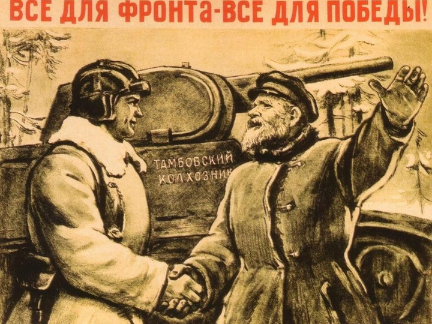
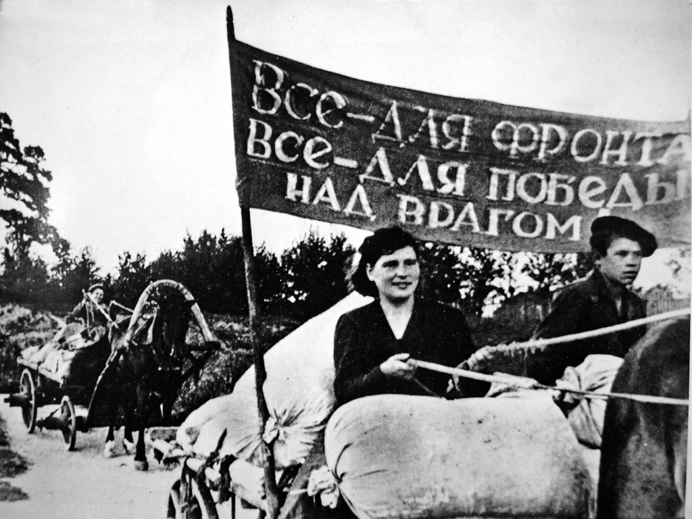
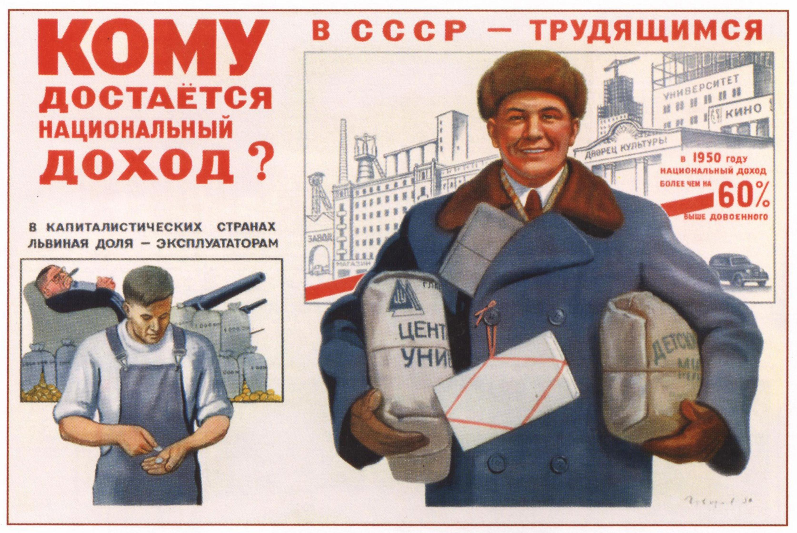

Налоговая политика СССР в период войны
Во время Великой Отечественной войны продолжает действовать система обязательных платежей из прибыли государственных предприятий. Дополнительные потребности бюджета обеспечивались за счет новых налогов и сборов с населения (налог на холостяков, на одиноких и малосемейных граждан СССР, военный налог, сбор с владельцев скота, сбор за регистрацию охотничье-промысловых собак).
Налог на холостяков, одиноких и малосемейных граждан
21 ноября 1941 г. вводится налог на холостяков, одиноких и малосемейных граждан. Самый экзотический из применявшихся в СССР налогов был введен с целью мобилизации дополнительных средств на оказание помощи многодетным матерям, а также на содержание и воспитание детей, родители которых погибли в годы войны. Первоначально налог вводился только для граждан, не имеющих детей. С 1944 года указом Президиума Верховного Совета СССР от 8 июля 1944 года этот налог стали уплачивать и граждане, имеющие одного или двух детей. Этот налог не имеет аналогов в истории и, кроме СССР, был установлен только в Монголии. Изначально налог вводился как временный, но просуществовал до начала 1990-х годов. К этому времени его уплачивали состоящие в браке и не имеющие детей граждане.
Сельскохозяйственный и подоходный налог
В начале войны рост налоговых поступлений был обеспечен за счет стопроцентной надбавки к сельскохозяйственному и подоходному налогам. Кроме того, для укрепления местных бюджетов 75% средств, собранных на селе по самообложению, стали включаться в сельский и районный бюджеты на финансирование социально-культурных мероприятий.
Однако обеспечить значительный рост поступлений в бюджет за счет налогов с населения в пределах действующей до войны налоговой системы, включая даже и установленную надбавку, было невозможно. Налоговое обложение основной массы плательщиков - колхозного крестьянства, рабочих и служащих, интеллигенции было построено по весьма плавной прогрессии, причем, когда размер доходов достигает определенного уровня, ставки налога из прогрессивных переходят в пропорциональные. Наряду с этим, в силу различных льгот, от налоговых платежей освобождалось большое количество граждан разных групп, еще более возросшее в период войны (семьи военнослужащих, инвалиды войны и т.д.).
Военный налог
Указом Президиума Верховного Совета СССР «О военном налоге» от 29 декабря 1941 г. был введен военный налог. С его введением были отменены надбавки к сельскохозяйственному и подоходному налогам. Основной принцип военного налога и его главный отличительный признак заключался в подушном обложении. К налогу привлекались все граждане СССР, достигшие 18 лет. От уплаты налога освобождались:
-военнослужащие рядового, младшего командного и младшего начальствующего состава Рабоче-крестьянской Красной Армии, Военно-Морского Флота, пограничных и внутренних войск;
-военнослужащие среднего, старшего и высшего командного и начальствующего состава, находящиеся в действующей армии, в действующем Военно-Морском Флоте и пограничных войсках;
-члены семей военнослужащих, получающих пособие от государства;
-инвалиды 1-й и 2-й групп инвалидности и пенсионеры, не имеющие дополнительных заработков.

В отношении групп плательщиков с твердо фиксированными размерами доходов принцип подушного обложения должен был сочетаться с принципом подоходности. Поэтому ставки налога для рабочих и служащих и других групп несельскохозяйственного населения были построены в зависимости от размеров получаемых ими доходов (Например, при годовом заработке включительно до 1800 руб. налог - 120 руб., при заработке 2400 руб. - 180 руб. и т.д.). На селе были введены твердые ставки налога (колхозники и единоличники уплачивают налог в размере от 150 до 600 руб. в год с каждого члена хозяйства). Однако и они дифференцировались, но не в отношении отдельных плательщиков, а по республикам, областям, районам и даже селениям в зависимости от размеров средних доходов одного колхозного двора в данной местности.

Военный налог отличался от других налоговых платежей еще и тем, что его размеры были выше на 50% для всех граждан, которые по возрасту подлежали мобилизации в армию, но по тем или иным причинам не были мобилизованы или призваны (отсрочка, физический недостаток и т.д.).
Взимание военного налога позволило мобилизовать в доходы бюджета за годы войны св. 72,1 млрд. руб., что сыграло важную роль в финансировании военных расходов.
Основные изменения в системе платежей в 1960-е гг.
В третьей Программе КПСС, принятой на XXII съезде КПСС 31 октября 1961 г., предполагалась полная отмена налоговых платежей с населения. В середине 1960-х гг. в СССР планировалось осуществление коренной хозяйственной реформы, направленной на повышение эффективности и прибыльности налоговой системы. В сфере налогообложения к важнейшим мероприятиям по реформированию хозяйственного механизма следует отнести: изменение порядка распределения прибыли государственных предприятий, введение платы за фонды, фиксированных (рентных) платежей, реформирование системы подоходного обложения колхозов. Фактически неизменной оставалась система взимания налога с оборота.

Постановлением ЦК КПСС и СМ СССР от 4 октября 1965 г. в целях повышения заинтересованности предприятия в лучшем использовании производственных основных фондов и оборотных средств был введен налог "Плата за фонды". Он представлял собой форму распределения прибыли, которая являлась одним из первоочередных платежей из прибыли в госбюджет СССР. Подоходный налог с колхозников был установлен в соответствии с Указом Президиума ВС СССР от 10 апреля 1965 г. Подоходный налог с колхозников зачислялся в доходы государственных бюджетов союзных республик и служил регулирующим доходом главным образом районных и сельских бюджетов. Плательщиками выступали колхозники, имевшие доходы от сельского хозяйства.
Фиксированные (рентные) платежи были установлены с 1967 г. Эти платежи представляли собой форму изъятия в доход государства части прибыли объединений, предприятий, получение которой было обусловлено факторами, не зависящими от деятельности предприятия.
Более чем 90% государственного бюджета Советского Союза, как и его отдельных республик, формировалось за счет поступлений от народного хозяйства. Налоги с населения (прямые) занимали незначительный удельный вес, примерно 7-8% всех поступлений в бюджет.